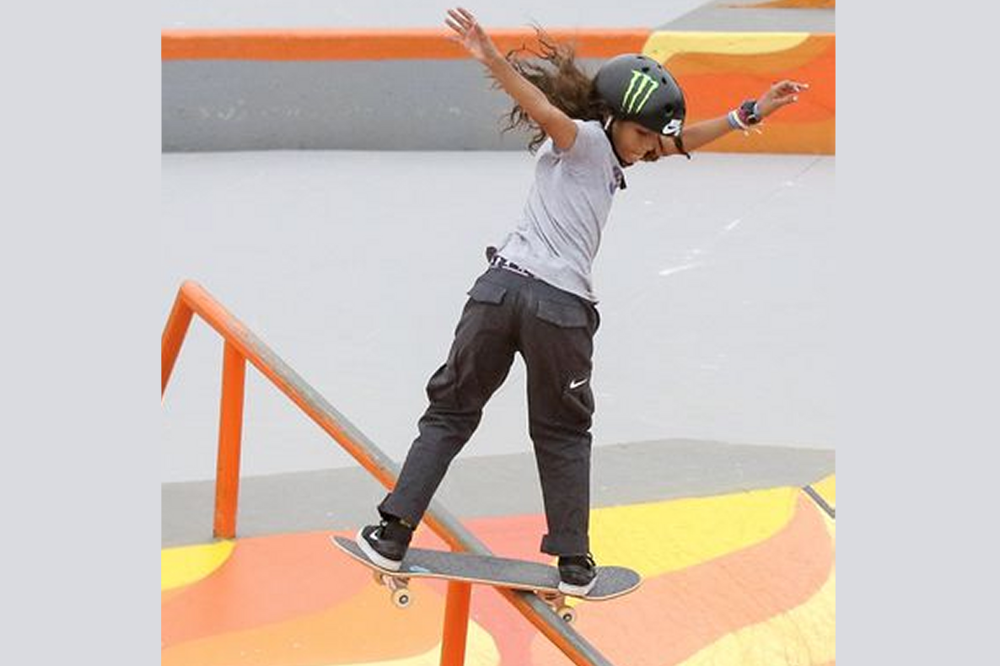
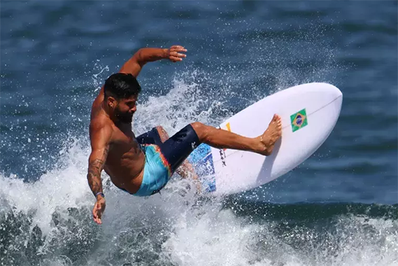
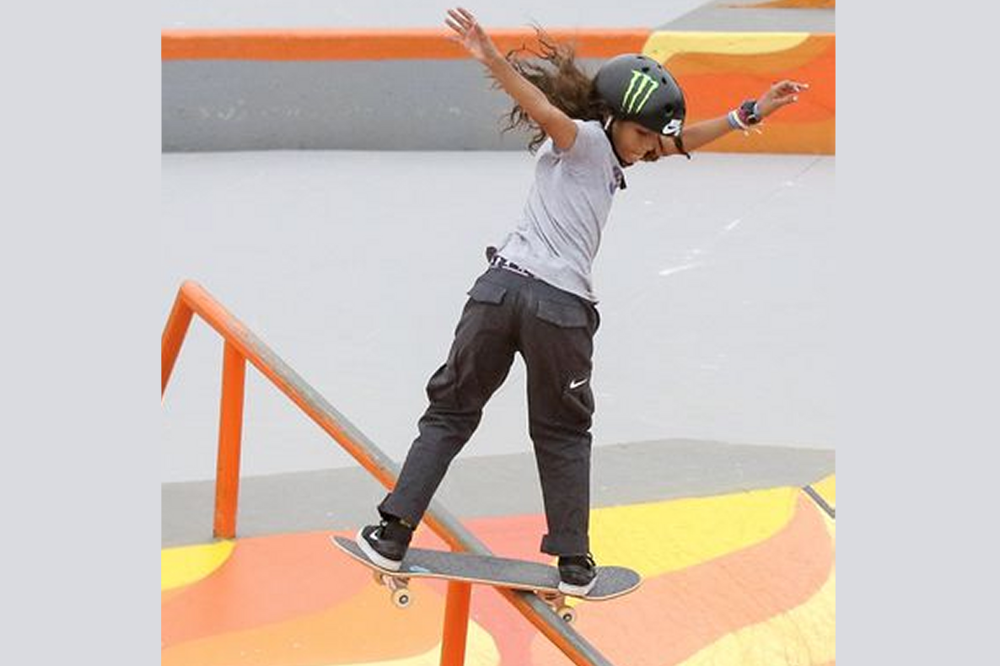

Kelvin Hoefler a grande esperança do skate street brasileiro nas Olimpíadas Leia Mais... Rayssa Leal: a caçula e uma das principais atletas brasileiras nas Olimpíadas de Tóquio Leia Mais...  Surf estreia na Olimpíada e Brasil entra como potência mundial Leia Mais... Tóquio: alerta de tufão deixa surfistas animados com ondas mais altas Leia Mais...  O que faz Brasil tão favorito no surf masculino. E o que pode dar errado Leia Mais... Confira abaixo alguns dos melhores momentos da surf e skate:
Rayssa Leal: a caçula e uma das principais atletas brasileiras nas Olimpíadas de Tóquio Leia Mais... 